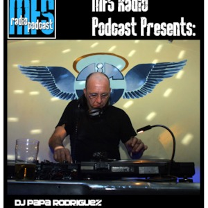

Dj Pappa Rodriguez è il nome d'arte di Roberto Bozzetti, nato a Bologna nel 1954.
Dj Rodriguez è stata un'importante figura della controcultura bolognese e italiana.
Attivo nel mondo della musica fin da giovanissimo, è un personaggio di spicco di Radio Alice negli anni 70: una delle prime radio libere e anticensura dell'Italia, le cui uniche regole erano la creatività e la spontaneità.
Partecipe dei fenomeni culturali in voga in quegli anni, Dj Pappa conosce il movimento hippy e sperimenta le tradizioni dei nativi americani fabbricandosi indumenti in cuoio nel laboratorio "la corte dei Miracoli" di via dell'Inferno.
Si può parlare di Dj Pappa come il primo dj hip-hop d'Italia, bolognese DOC che sarà uno dei fondatori dell'Isola Posse All Star, leggendaria crew rap-raggamuffin del' 90 nata all'Isola nel Kantiere, storico CSO nel centro di Bologna, situato precisamente in un'ala dell'Arena del Sole.
l'Isola viene considerata come "il più avanzato laboratorio di sperimentazione dell'hip hop e del rap italiano". Questo CSO sarà trampolino di lancio per i Sud Sound System e per i Sangue Misto, per Neffa, Deda, Gopher D e moltissimi altri.
Nel 1992 Dj Rodriguez partecipa con i suoi scratch al primo demo dei Massimo Volume e, con la Irma Records, casa discografica bolognese, pubblica due dischi: World Wide Funk nel 1998 e The Dj Rodriguez Football Club nel 2000.
Sempre presente in via del Pratello, nel 2003 interpreta sè stesso nel film Paris, Dabar di Paolo Angelini, che viene girato proprio nei locali di via del Pratello.

Dopo diversi mesi in coma a causa di un incidente stradale in scooter, Roberto muore a Bologna nel 2006 all'età di 52 anni.
Il suond di Dj Rodriguez si descrive da sè grazie al titolo di una collab con Neffa: Funky Marziano Italiano.
Dj Rodrigo è stato capace di unire nel suo liquido progetto musicale suoni alieni, tradizioni tribali e multientincità.
L'ingrediente per la sua ricetta perfetta rimane tutt'ora un segreto e per questo il suo repertorio conferma la sua attualità in ogni quando.
Dopo scrupolosi balletti abbiamo eletto Disco Boo come traccia del mese.
MASSIMO VOLUME